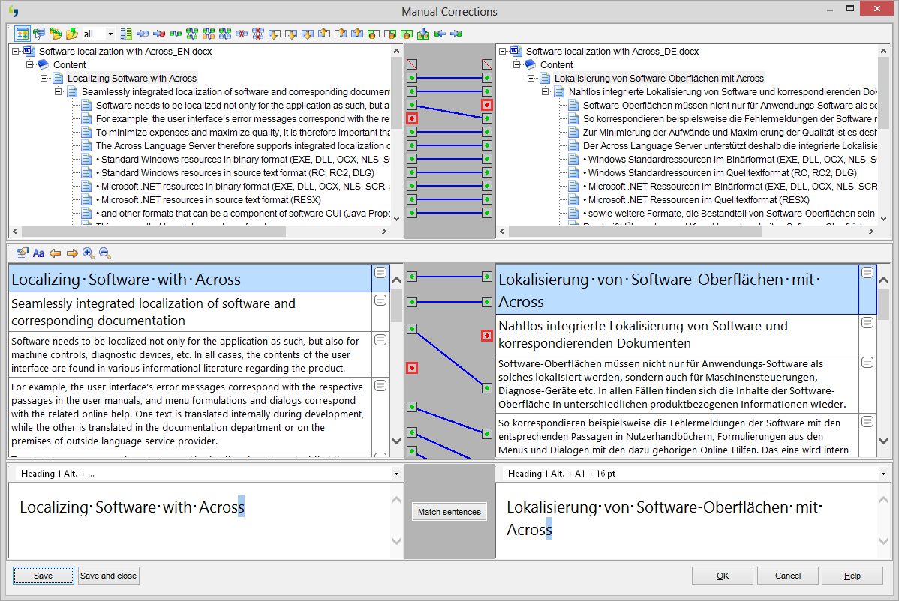

Sunoikisis DC 2015
Session 15: Text alignment in action
Neven Jovanović / neven.jovanovic@ffzg.hr
Petra Šoštarić
Mario Benedik
Dunja Ševerdija
University of Zagreb, Faculty of Humanities and Social Sciences
Department of Classical Philology
align
Pronunciation: /əˈlʌɪn/. Verb.
1.1 Put (things) into correct or appropriate relative positions: the fan blades are carefully aligned
figurative aligning domestic prices with prices in world markets
All this notwithstanding, the proposed Department is a positive move to align national form and function.
How do you move them from one point to the other, without going through that point that characterizes that mind - correcting it and aligning it, to conform to the overall Classical understanding?
Origin
Late 17th century: from French aligner, from à ligne 'into line'.
The plan
Introduction: what is alignment, and why should we care?
How do we do it?
Demonstration: what happens when we align Greek to Latin?
And when we align Latin (translation) to English (translation)?
And when we align Latin to French?
And when we align two Latin translations?
Conclusion: discuss!
And you try it out too!
What is alignment?
A strategy in automated translation
reusable, machine-supported, used mostly for technical translation

"Most commercial translation memory applications now include an aligner as part of a suite of tools."
"Alignment is a way of making use of previous translations."
"Translation Memory is created from existing translated materials."
"Convert legacy translations into money saving translation memories!"
Perhaps more familiar to philologists:
A parallel text is a text placed alongside its translation or translations.
Parallel text alignment is the identification of the corresponding sentences in both halves of the parallel text.
Harry C. Schnur (ed.). Lateinische Gedichte deutscher Humanisten. Lateinisch und Deutsch, Stuttgart 1967, 44f.
Why should we care?
The task of aligning makes us
connect all equivalents.
❧
This leads to
deeper understanding and closer experience
of both the source text and the target text as its equivalent.
Exemplo discimus!
More pragmatically,
turn to our pedagogical advantage the fact that a lot of Greek and Latin is today read in translation,
or with translation at hand.
Also,
contribute to building
a digital collection of
parallel texts
(and thus help the machines help us read Greek and Latin)
How do we do it?
Use Perseids!

"New Text Alignment"
Demonstrations
Greek and Latin
Homer, the Iliad in Greek — and translated into Latin by Andreas Divus Iustinopolitanus, Venice 1537
Iustinopolis / Capodistria / Koper / Kopar / www.wikidata.org/wiki/Q1015
"Lie quiet Divus. I mean, that is Andreas Divus, In officina Wecheli, 1538, out of Homer."
Ezra Pound, Canto I (1917)
Latin and French
Hom. Il. 3
(Perseus, urn:cts:greekLit:tlg0012.tlg001.perseus-grc1:3)
Latin: Andreas Divus, Venice 1537.
French: d'après Eugène LASSERRE, Homère, Iliade. Paris, Classiques Garnier, 1955. (via Hodoi elektronikai)
Latin and English
Hom. Il. 3
(Perseus, urn:cts:greekLit:tlg0012.tlg001.perseus-grc1:3)
Latin: Andreas Divus, Venice 1537.
English: Alexander Pope, The Iliad (1715).
Latin and Latin
Hom. Il. 3 (Perseus, urn:cts:greekLit:tlg0012.tlg001:3)
Latin: Laurentius Valla, 1444.
Latin: Andreas Divus, Venice 1537.
Discussion
❧
Modelling translation
with RDF
http://croala.ffzg.unizg.hr/ghlh/translation-source/10344
croala:wordform "λέγεις"@grc ;
saws:isDirectTranslationOf http://croala.ffzg.unizg.hr/ghlh/translation-target/10496 ;
dcterms:isPartOf "10331" .
http://croala.ffzg.unizg.hr/ghlh/translation-source/10356
croala:wordform "πότερον"@grc ;
saws:isLooseTranslationOf http://croala.ffzg.unizg.hr/ghlh/translation-target/10478, http://croala.ffzg.unizg.hr/ghlh/translation-target/10484 ;
dcterms:isPartOf "10331" .
Querying RDF of aligned texts
with SPARQL
Query: show all Croatian translation equivalents of καὶ, counting occurrences of each equivalent.
arq --data ghlh-rdf/ghlh-rdf.ttl --query kai4.rq
# contents of file kai4.rq:
SELECT ?hrvr (COUNT(?hrv) AS ?brhrvr)
WHERE
{
?id ?p "καὶ"@grc .
?id ?pp ?hrv .
?hrv c:wordform ?hrvr .
}
GROUP BY ?hrvr
ORDER BY ?brhvr
A SPARQL query in file kai4.rq (using arq).
-------------------------
| hrvr | brhrvr |
=========================
| "i" | 59 |
| "a" | 6 |
| "te" | 4 |
| "," | 2 |
| "." | 1 |
| "A" | 1 |
| "I" | 1 |
| "No" | 1 |
| "djeda" | 1 |
| "drukčije" | 1 |
| "između" | 1 |
| "kako" | 1 |
| "naslonjaču" | 1 |
| "oca" | 1 |
| "onima" | 1 |
| "osamdeset" | 1 |
| "s" | 1 |
| "stotinu" | 1 |
| "također" | 1 |
-------------------------
Result of SPARQL query from file kai4.rq.
Homework
Choose a sentence (preferably in Greek or Latin) and its translation (existing one, or the one you make yourself). Using Perseids ("New Text Alignment"), align words from the source with equivalents in the target. Submit to the Zagreb Homer 2015 board for review and credit points.